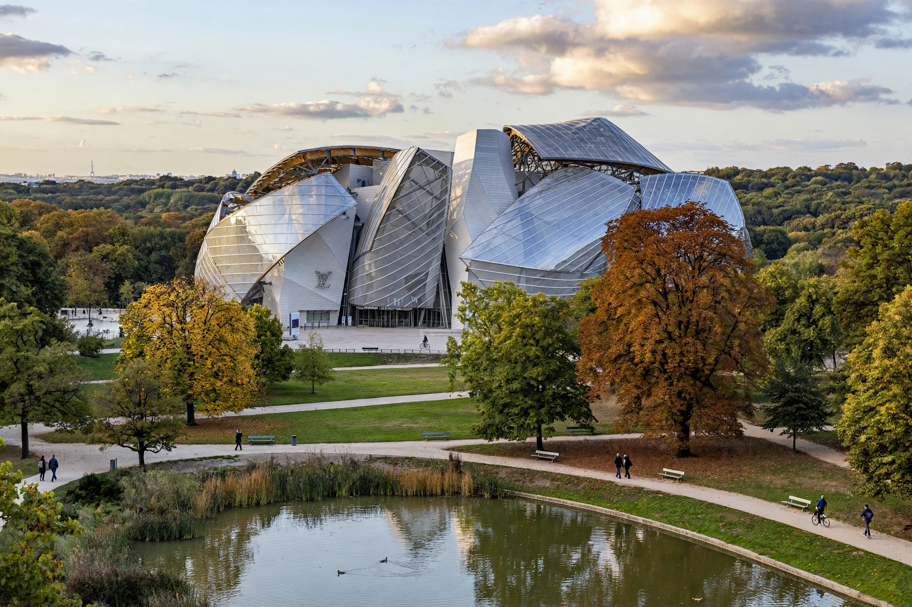

From Wikipedia, the free encyclopedia
| Fondation Louis Vuitton | |
|---|---|
 | |
| Established | Opened 27 October 2014 |
| Location | 8 Avenue du Mahatma Gandhi, Bois de Boulogne, Paris |
| Architect | Frank Gehry |
| Founder | Bernard Arnault / LVMH |
| Type | Art museum and cultural centre |
The Fondation Louis Vuitton is an art museum and cultural centre in the Bois de Boulogne in Paris, sponsored by the LVMH group and its subsidiaries. It opened in October 2014 in a landmark building designed by architect Frank Gehry, commissioned by Bernard Arnault to present modern and contemporary art and the foundation's own collection.
The building consists of an "iceberg" of white concrete blocks wrapped in twelve vast curved glass "sails" supported by wooden and steel beams, evoking a ship or cloud. Its construction pushed digital design and fabrication techniques, with thousands of unique glass panels. Terraces on the sails overlook Paris and the Jardin d'Acclimatation next door.
The foundation holds works by artists such as Jean-Michel Basquiat, Gerhard Richter, Olafur Eliasson and Ellsworth Kelly, and stages major temporary exhibitions — retrospectives of the Shchukin and Morozov collections of modern art drew record crowds. Under its agreement with the City of Paris, the building will pass to the city after 55 years.